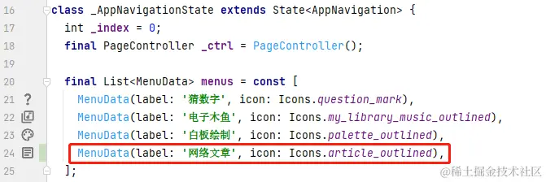
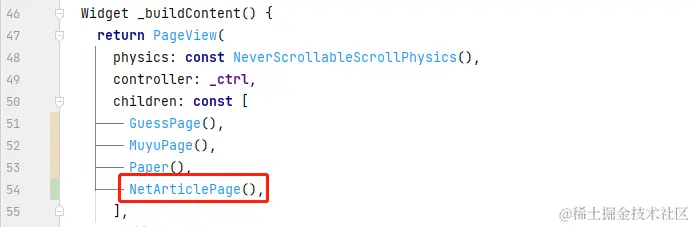
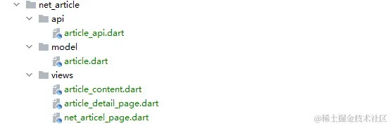
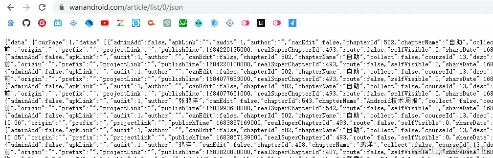
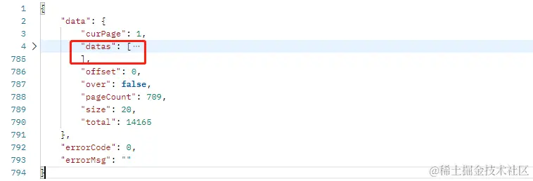
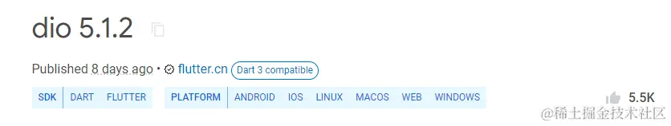
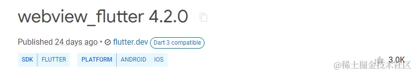
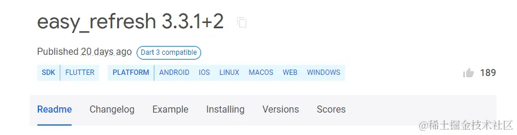
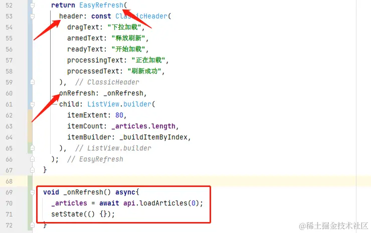

- 01 前言-教程内容导读.md.html
- 02 Flutter 开发环境的搭建.md.html
- 03 新手村基础 Dart 语法 (上).md.html
- 04 新手村基础 Dart 语法 (下).md.html
- 05 Flutter 计数器项目解读.md.html
- 06 猜数字界面交互与需求分析.md.html
- 07 使用组件构建静态界面.md.html
- 08 状态数据与界面更新.md.html
- 09 校验结果与提示信息.md.html
- 10 动画使用与状态周期.md.html
- 11 猜数字整理与总结.md.html
- 12 电子木鱼界面交互与需求分析.md.html
- 13 电子木鱼静态界面构建.md.html
- 14 计数变化与音效播放.md.html
- 15 弹出选项与切换状态.md.html
- 16 用滑动列表展示记录.md.html
- 17 电子木鱼整理与总结.md.html
- 18 白板绘制界面交互与需求分析.md.html
- 19 认识自定义绘制组件.md.html
- 20 通过手势在白板上绘制.md.html
- 21 白板画笔的参数设置.md.html
- 22 撤销功能与画板优化.md.html
- 23 应用界面整合.md.html
- 24 数据的持久化存储.md.html
- 25 网络数据的访问.md.html
- 26 教程总结与展望.md.html
- 捐赠
25 网络数据的访问
一、需求介绍和准备工作
上一章介绍了本地数据的持久化，它可以让应用退出后，仍可以在启动后通过读取数据，恢复状态数据。但如果手机丢了，或者本地数据被不小心清空了，应用就又会 "失忆" 。
1. 本章目的
现在移动互联网已经极度成熟了，将数据存储在远程的服务器中，通过网络来访问、操作数据对于现在的人已经是家常便饭了。比如微信应用中的聊天记录、支付宝应用中的余额、美团应用中的店铺信息、游戏里的资源装备、抖音里的视频评论… 现在的网络数据已经无处不在了。所以对于应用开发者来说，网络请求的技能是必不可少的。
但是学习网络请求有个很大的问题，一般的网络接口都是肯定不会暴露给大众使用，而自己想要搭建一个后端提供网络接口又很麻烦。所以一般会使用开放 api ，我曾建议过掘金提供一套开放 api , 以便写网络相关的教程，但目前还没什么动静。这里就选用 wanandroid 的开发 api 接口来进行测试。
本章目的是完成一个简单的应用场景：从网络中加载文章列表数据，展示在界面中。点击条目时，可以跳转到详情页，并通过 WebView 展示网页。
| 文章列表 | 文章详情 |
|---|---|
2. 界面准备
现在想在底部栏添加一个网络文章的按钮，点击时切换到网络请求测试的界面。只需要在 _AppNavigationState 的 menus 增加一个 MenuData ：

然后在 PageView 内增加一个 NetArticlePage 组件，用于展示网络文章的测试界面：

新建一个 net_article 的文件夹用于盛放网络文章的相关代码，其中：
- views 文件夹盛放组件视图相关的文件，比如主页面、详情页等。
- model 文件夹用于盛放数据模型，比如文章数据的封装类。
- api 文件夹盛放网络数据请求的代码，在功能上相当于上一章的 storage , 负责读取和写入数据。只不过对于网络数据再说，是存储在服务器上的，需要提供接口来操作。

NetArticlePage 组件现在先准备一下：通过 Scaffold 构建界面结构，由于之前已经提供了 AppBar 的主题，这里直接给个 title 即可，其他配置信息会默认跟随主题。接下来最重要的任务就是对 body 主体内容的构建。
class NetArticlePage extends StatelessWidget {
const NetArticlePage({Key? key}) : super(key: key);
@override
Widget build(BuildContext context) {
return Scaffold(
appBar: AppBar(
title: const Text('网络请求测试'),
),
body: Container(),
);
}
}
3. 接口介绍
这里只使用一个获取文章列表的如下接口，其中 0 是个可以改变的参数，表示文章的页数：
通过浏览器可以直接看到接口提供的 json 数据：

使用 json 美化工具可以看出如下的结构，主要的文章列表数据在 data["datas"] 中 :

每条记录的数据如下，其中数据有很多，不过没有必要全都使用。这里展示文章信息，只需要标题 title 、地址 link 、 时间 niceDate 即可。
{
"adminAdd": false,
"apkLink": "",
"audit": 1,
"author": "",
"canEdit": false,
"chapterId": 502,
"chapterName": "自助",
"collect": false,
"courseId": 13,
"desc": "",
"descMd": "",
"envelopePic": "",
"fresh": true,
"host": "",
"id": 26411,
"isAdminAdd": false,
"link": "https://juejin.cn/post/7233067863500849209",
"niceDate": "7小时前",
"niceShareDate": "7小时前",
"origin": "",
"prefix": "",
"projectLink": "",
"publishTime": 1684220135000,
"realSuperChapterId": 493,
"route": false,
"selfVisible": 0,
"shareDate": 1684220135000,
"shareUser": "张风捷特烈",
"superChapterId": 494,
"superChapterName": "广场Tab",
"tags": [],
"title": "Dart 3.0 语法新特性 | Records 记录类型 (元组)",
"type": 0,
"userId": 31634,
"visible": 1,
"zan": 0
}
4.数据模型的封装
这样，可以写出如下的 Article 类承载数据，并通过一个 formMap 构造通过 map 数据构造 Article 对象。
class Article {
final String title;
final String url;
final String time;
const Article({
required this.title,
required this.time,
required this.url,
});
factory Article.formMap(dynamic map) {
return Article(
title: map['title'] ?? '未知',
url: map['link'] ?? '',
time: map['niceDate'] ?? '',
);
}
@override
String toString() {
return 'Article{title: $title, url: $url, time: $time}';
}
}
二、基础功能的实现
俗话说巧妇难为无米之炊，如果说界面是一碗摆在台面上的饭，那数据就是生米，把生米煮成熟饭就是组件构建的过程。所以实现基础功能有两大步骤： 获取数据、构建界面。
1. 网络数据的请求
网络请求是非常通用的能力，开发者自己来写非常复杂，所以一般使用三方的依赖库。对于 Flutter 网络请求来说，最受欢迎的是 dio , 使用前先添加依赖：
dependencies:
...
dio: ^5.1.2

下面看一下最简单的使用，如下在 ArticleApi 中持有 Dio 类型的 _client 对象，构造时可以设置 baseUrl 。然后提供 loadArticles 方法，用于加载第 page 页的数据，其中的逻辑处理，就是加载网络数据的核心。
使用起来也很方便，提供 Dio#get 方法就可以异步获取数据，得到之后，从结果中拿到自己想要的数据，生成 Article 列表即可。
class ArticleApi{
static const String kBaseUrl = 'https://www.wanandroid.com';
final Dio _client = Dio(BaseOptions(baseUrl: kBaseUrl));
Future<List<Article>> loadArticles(int page) async {
String path = '/article/list/$page/json';
var rep = await _client.get(path);
if (rep.statusCode == 200) {
if(rep.data!=null){
var data = rep.data['data']['datas'] as List;
return data.map(Article.formMap).toList();
}
}
return [];
}
}
2. 文章内容界面展示
这里单独创建一个 ArticleContent 组件负责展示主题内容，由于需要加载网络数据，加载成功后要更新界面，使用需要使用状态类来维护数据。所以让它继承自 StatefulWidget ：
class ArticleContent extends StatefulWidget {
const ArticleContent({Key? key}) : super(key: key);
@override
State<ArticleContent> createState() => _ArticleContentState();
}
对于状态类来说，最重要数据是 Article 列表，build 构建逻辑中通过 ListView 展示可滑动列表，其中构建条目时依赖列表中的数据：
class _ArticleContentState extends State<ArticleContent> {
List<Article> _articles = [];
@override
Widget build(BuildContext context) {
return ListView.builder(
itemExtent: 80,
itemCount: _articles.length,
itemBuilder: _buildItemByIndex,
);
}
Widget _buildItemByIndex(BuildContext context, int index) {
return ArticleItem(
article: _articles[index],
onTap: _jumpToPage,
);
}
}
另外这里单独封装了 ArticleItem 组件展示条目的单体，效果如下，大家可以自己处理一下，这里就不放代码了，处理不好的话可以参考源码。
最后只要在 initState 回调中通过 ArticleApi 加载网络数据即可，加载完成后通过 setState 更新界面：
ArticleApi api = ArticleApi();
@override
void initState() {
super.initState();
_loadData();
}
void _loadData() async{
_articles = await api.loadArticles(0);
setState(() {
});
}
到这里，最基础版的网络请求数据，进行界面展示的功能就完成了。当然现在的代码还存在很大的问题，下面将逐步进行优化。
| ———————————————————— | ———————————————————— |
3. 在应用中展示 Web 界面
文章数据中有一个链接地址，可以通过 WebView 来展示内容。同样也是使用三方的依赖库 webview_flutter 。 使用前先添加依赖：
dependencies:
...
webview_flutter: ^4.2.0

使用起来来非常简单，创建 WebViewController 请求地址，然后使用 WebViewWidget 组件展示即可：
class ArticleDetailPage extends StatefulWidget {
final Article article;
const ArticleDetailPage({Key? key, required this.article}) : super(key: key);
@override
State<ArticleDetailPage> createState() => _ArticleDetailPageState();
}
class _ArticleDetailPageState extends State<ArticleDetailPage> {
late WebViewController controller;
@override
void initState() {
super.initState();
controller = WebViewController()
..setJavaScriptMode(JavaScriptMode.unrestricted)
..setBackgroundColor(const Color(0x00000000))
..loadRequest(Uri.parse(widget.article.url));
}
@override
Widget build(BuildContext context) {
return Scaffold(
appBar: AppBar(title: Text(widget.article.title)),
body: WebViewWidget(controller: controller),
);
}
}
最后，在列表界面点击时挑战到 ArticleDetailPage 即可。这样就完成了 Web 界面在应用中的展示，当前代码位置 net_article：
void _jumpToPage(Article article) {
Navigator.of(context).push(
MaterialPageRoute(
builder: (_) => ArticleDetailPage(article: article),
),
);
}
| 文章1 | 文章2 |
|---|---|
三、功能优化
现在有三个值得优化的地方：
- 网络加载数据的过程比较慢，加载成功之前文章列表是空的，界面展示空白页体验不好。可以在加载过程中展示 loading 界面。
- 当前加载数据完后，无法在重新加载，可以增加下拉刷新功能。
- 现在只能加载一页数据，可以在滑动到底部，加载下一页内容，也就是加载更多的功能。
1. 增加 loading 状态
如下左图在网络上请求时没有任何处理，会有有一段时间的白页；如右图所示，在加载过程中给出一些界面示意，在体验上会好很多。
| 无 loading 状态 | 有 loading 状态 |
|---|---|
其实处理起来也并不复杂，由于界面需要感知加载中的状态，示意需要增加一个状态数据用于控制。比如这里在状态类中提供 _loading 的布尔值来表示，该值的维修事件也很明确：加载数据前置为 true 、加载完后置为 false 。
bool _loading = false;
void _loadData() async {
_loading = true;
setState(() {});
_articles = await api.loadArticles(0);
_loading = false;
setState(() {});
}
上面是状态数据的逻辑处理，下面来看一下界面构建逻辑。只要在 _loading 为 true 时，返回加载中对应的组件即可。如果加载中的界面比较复杂，或想要在其他地方复用，也可以单独封装成一个组件来维护。
@override
Widget build(BuildContext context) {
if(_loading){
return Center(
child: Wrap(
spacing: 10,
direction: Axis.vertical,
crossAxisAlignment: WrapCrossAlignment.center,
children: const [
CupertinoActivityIndicator(),
Text("数据加载中，请稍后...",style: TextStyle(color: Colors.grey),)
],
),
);
}
return ListView.builder(
itemExtent: 80,
itemCount: _articles.length,
itemBuilder: _buildItemByIndex,
);
}
这样，就完成了展示界面加载中的功能，当前代码位置 article_content.dart。
2. 下拉刷新功能
如下所示，在列表下拉时，头部只可以展示加载的信息，这种效果组件手写起来非常麻烦。
这是一个通用的功能，好在我们可以依赖别人的代码，使用三方库来实现，这里用的是 easy_refresh。使用前先添加依赖：
dependencies:
...
easy_refresh: ^3.3.1+2

使用方式也非常简单，将 EasyRefresh 组件套在 ListView 上即可。在 header 中可以放入头部的配置信息，通过 onRefresh 参数设置下拉刷新的回调，也就是从网络加载数据，成功后更新界面。

3. 加载更多功能
上面只能展示一页的数据，如果需要展示多页怎么办? 一般来说应用在滑动到底部会加载更多，如下所示：
实现起来也非常简单 EasyRefresh 的 onLoad 参数设置下拉回调，加载下一页数据，并加入 _articles 数据中即可。这里一页数据有 20 条，下一页也就是 _articles.length ~/ 20 :
void _onLoad() async{
int nextPage = _articles.length ~/ 20;
List<Article> newArticles = await api.loadArticles(nextPage);
_articles = _articles + newArticles;
setState(() {});
}
四、本章小结
本章主要介绍了如何访问网络数据，实现了文章列表的展示，以及通过 WebView 在应用中展示网页内容，完成简单的文章查看功能。并且基于插件实现了下拉刷新、加载更多的功能。
到这里一个最基本的网络文章数据的展示就实现完成了, 当前代码位置 article_content。也标志着本系列教程进入了尾声，还有很多值得优化的地方，希望大家再以后的路途中可以自己思考和处理。
© 2019 - 2023 Liangliang Lee. Powered by gin and hexo-theme-book.